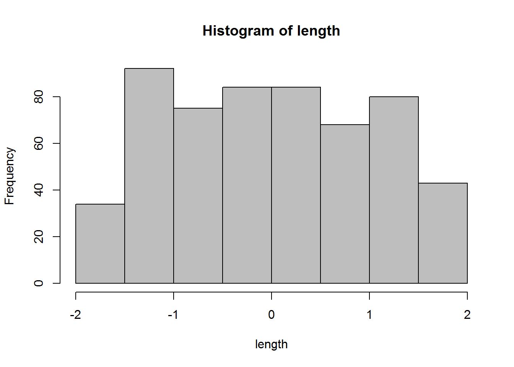
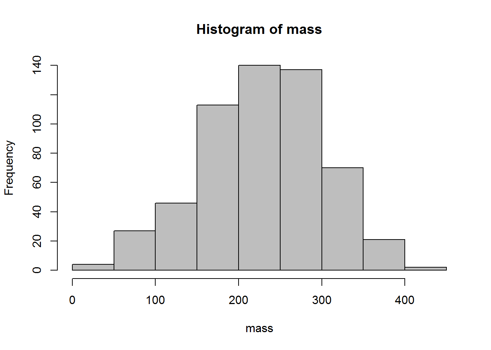
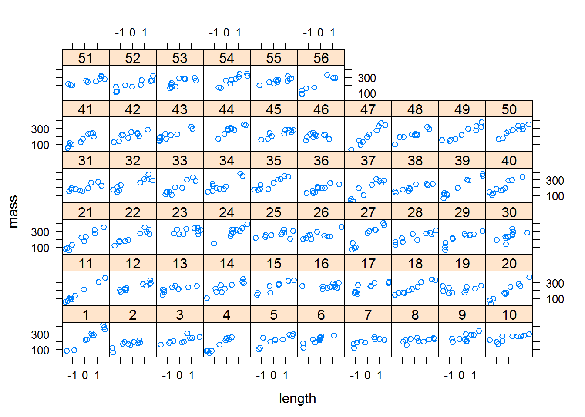
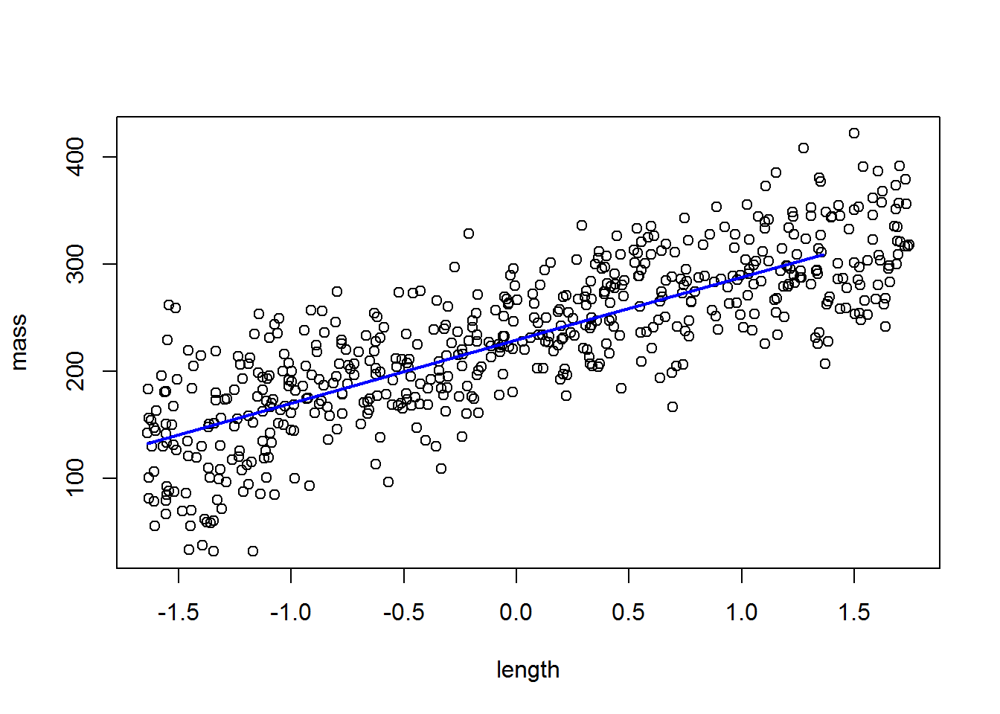
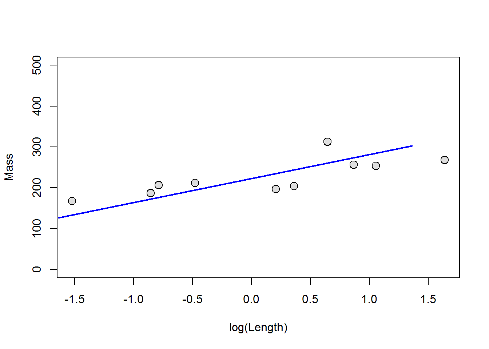
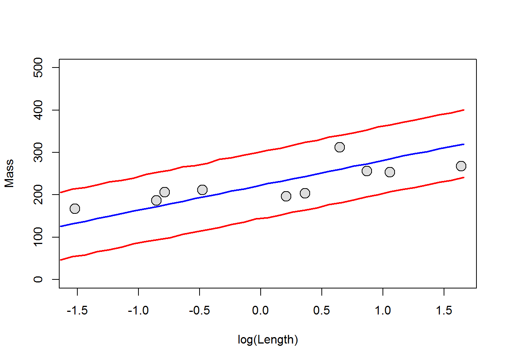
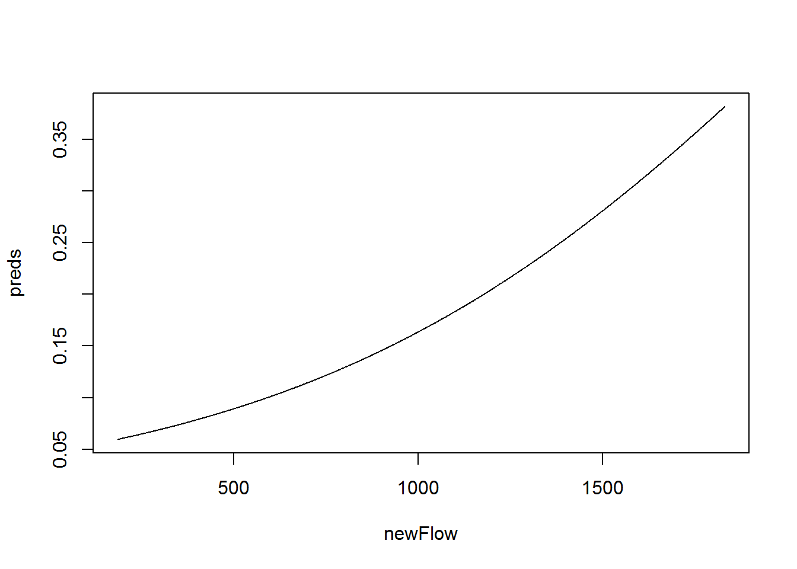
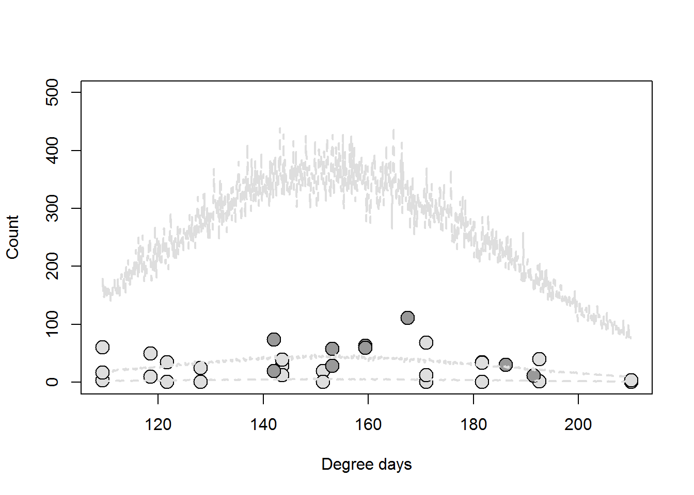
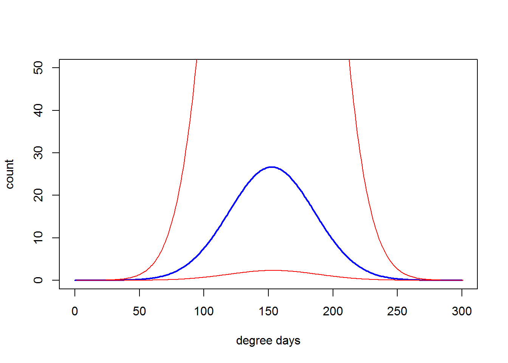

This week we will talk about extending linear models and generalized linear models to include “random effects” in the model, thus resulting in the “generalized linear mixed model” or GLMM. The GLMM is actually the most generalized formulation of our linear models that we have been discussing now for the past several weeks. All linear models (ANOVA, regression, t-tests, etc.) are simply special cases of the GLMM. As such, we can think of the GLMM as the framework within which we have been working for weeks now! For this week, we will start with examples of the linear mixed model.
OMG, why is this guy always talking about assumptions of linear models no matter what we do?!
Just as we discussed last week, linear models are just a special case of the GLMM. That is, the linear model assumes a certain error distribution (the normal) that helps things work smoothly and correctly. During the last two weeks, we discussed how we can use link functions to relax the assumption of linear models with respect to normality of residuals and homogeneity of variances, as well as assumptions about the linearity of relationships between explanatory variables and responses of interest by using data transformation. This week, we continue to relax the underlying assumptions of linear models to unleash the true power of estimation in mixed effects models. This is essentially as far as the basic framework for linear modeling goes (with the exception of multivariate techniques), and all other cases (e.g. spatial and temporal autocorrelation regressions) are simply specialized instances of these models.
Let’s take another look at the assumptions of linear models. Here, we will repeat the mantra from the past few weeks. Here are the three assumptions that we explicitly use when we use linear models, just in case you’ve forgotten them:
Independence of observations (residuals)
We’ve seen these before, but let’s recap. For assumption 1, we are assuming a couple of implicit things: 1. The variable is continuous (and it must be if it’s error structure is normal), and 2. The error in our model is normally distributed. In reality, this is probably the least important assumption of linear models, and really only matters if we are trying to make predictions from the models that we make. Of course, we are often concerned with making predictions from the models that we make, so we can see why this might be important. However, more often we are in extreme violation of this assumption in some combination with assumption 4 above to such a degree that it actually does matter. For example, a response variable that is binomial (1 or zero) or multinomial in nature cannot possibly have normally distributed errors with respect to x unless there is absolutely no relationship between X and Y, right? So, if we wanted to predict the probability of patients dying from some medical treatment, or the presence/absence of species across a landscape then we can’t use linear models. This is where the link functions that we have been discussing really come into play. The purpose of the link function is to place our decidedly non-normal error structures into an asymptotically normal probability space. The other key characteristic of the link function is that it must be invertible, that way we can get back to the parameter scale that we want to use for making predictions and visualizing the results of our models.
This time we’ve broken assumption 2 in two components: Colinearity and autocorrelation of errors. Remember that the manifestation of these problems is in the precision of our coefficient estimates, and have the potential to change the Type-I/II error rates in our models, causing us to draw false conclusions about which variables are important. As we discussed earlier in the course we expect to see some colinearity between observations, and we can deal with balancing this in our modeling through the use of model selection techniques to reduce Type-I and Type-II error. The past couple of weeks, we examined tools that help us determine whether or not colinearity is actually causing problems in our models that go beyond minor nuisances. As for the second part, autocorrelation, we looked at formulations of the GLM that used ‘generalized least squares’ to include auto-regressive correlation matrices in our analysis that will allowed us to relax this assumption of linear models and improve the precision of our parameter estimates. This week, we will further extend this to include random effects to account for non-independence in the observations, and correlation in the residual errors of explanatory variables that could otherwise cause issues with accuracy and precision of our estimates. We will continue to use model selection as a method for determining tradeoffs between information gain and parameter redundancy that results from colinearity between explanatory variables, as well as for hypothesis testing.
In past weeks, we looked at ways to reduce this issue by introducing blocking (categorical) variables to our models. Last week, we noted that this could be further mitigated through the use of weighted least squares and MLE within the GLM framework, which can be applied to a wide range of regression methods from linear models to GLMs and GLMMs. This week we will examine how we can use various formulations of the GLMM to account for heteroscedasticity in residual errors directly by including the appropriate error terms in our models. This essentially means that we can start to account for things like repeated measures, nested effects, and various other violations through the use of one tool- nifty!
We’ve already looked at a couple of ways to deal with violations of these assumptions such as data transformation and/or polynomial formulations of the linear model. We will continue to apply these concepts this week as we begin to investigate the GLMM as robust framework for analysis.
The first thing you should understand about GLMMs is that they are useful for analyzing data from a large number of statistical probability distributions (basically, you can use them for any underlying error structure). But, when we use specific error structures, or make certain assumptions about the manner in which the heterogeneity of variances is structured with respect to specific factors, this model is often given specific names. For example, repeated measures ANOVA (or ANCOVA), nested ANOVA(or ANCOVA), factorial ANOVA (or ANCOVA), linear mixed models, linear mixed effects models, and generalized linear mixed effects models are all just different formulations of the GLMM with different names. It sounds confusing, but just remember this: any linear model with combinations of fixed and random effects is, at it’s core, just another GLMM! If you can convince yourself of this, you will improve your ability to understand a wide range of experimental designs and accompanying statistical models by understanding this one model type.
The second thing you should understand to “get” GLMMs is what exactly is meant by a “random effect”. So far in this course we have only dealt with “fixed” group effects. The fixed effect is a categorical variable that is used to explain some variation in our response of interest. When we use a fixed effect in a statistical model, we are making the assumption that the categories for this effect are “fixed”. In other words, we have assigned the the levels, or categories, based on some a priori knowledge that the levels themselves represent all possible groups that can be used to describe the data. Because of this definition, fixed effects are usually 1) things that we manipulate directly (like dosage or some other treatment), or 2) relatively simple grouping variables such as sex. By contrast, a “random effect” is an effect that we do not generally set ahead of time or manipulate, but rather one which is considered to be a sample from a population of potential categories that we cannot census or (often) control. Please note that there is not a single, widely accepted definition for either of these things in applied statistics and the definition can be context-specific. Don’t take it from me, though, ask Andrew Gelman, globally recognized as one of the world’s leading experts on applied statistics, including the development of many modern approaches here.
We will start our explorations into GLMM by looking at the somewhat familiar case of normal data. As with the relationship between ANOVA and GLM, we can say that the linear mixed model (LMM) is just a special case of the GLMM (hence the name).
So, what is a mixed model? This is a model that assumes some parameter of interest is drawn from a random sample from a distribution of possible samples. We usually use these when we are dealing with repeated samples for some group or individual, or if we wish to account for some latent variable beyond our control (e.g. lake). Essentially, the use of random effects allows us to remove extraneous noise (variance) from the study system by accounting for it directly. This can improve both the accuracy and the precision of estimates to make hypothesis testing more robust. It also allows us to generalize our conclusions to a broader scope (e.g. any lake instead of lakes X, Y, and Z). Finally, the approach allows for a great deal of flexibility in assumptions we make about the effects and associated errors in our model. We might assume within our model that effects are randomized by assigning random intercepts, random slopes and intercepts that are independent, or random slopes or intercepts that are correlated across our random variable. There are even rare cases when we might wish to examine random slopes with shared intercepts. Generally speaking, we want our random variable to contain a relatively large number of potential levels (usually > 5) as this tends to result in more accurate, and more precise parameter estimates.
As with so many things, these tools are often best investigated through the use of a worked example. For this section, we will simulated data about asps, and we’ll walk through maximum likelihood estimation of the LMM.
We will start by generating the data used in the book chapter. These data are for the viper asps from Chapter 9, with a new twist. Here, we simulate length and mass data for 10 vipers from each of 56 different populations. I will not cover the following in detail here, but I encourage you to delve into it as you work through your text book.
Here is the code for data simulation, shamelessly copy-and-pasted from Chapter 12 of:
Kery, M. 2010. Introduction to WinBUGS for Ecologists. Academic Press, Upper Saddle River, NY.
You do not need to know this for this class, but I wanted you to see what goes into the data simulation.
n.groups <- 56 # Number of populations
n.sample <- 10 # Number of vipers in each pop
n <- n.groups * n.sample # Total number of data points
pop <- gl(n = n.groups, k = n.sample) # Indicator for population
# Body length (cm)
original.length <- runif(n, 45, 70)
mn <- mean(original.length)
sd <- sd(original.length)
cat("Mean and sd used to normalise.original length:", mn, sd, "\n\n")## Mean and sd used to normalise.original length: 57.13128 7.36973length <- (original.length - mn) / sd
hist(length, col = "grey")
Xmat <- model.matrix(~pop*length-1-length)
intercept.mean <- 230 # mu_alpha
intercept.sd <- 20 # sigma_alpha
slope.mean <- 60 # mu_beta
slope.sd <- 30 # sigma_beta
intercept.effects<-rnorm(n = n.groups, mean = intercept.mean, sd = intercept.sd)
slope.effects <- rnorm(n = n.groups, mean = slope.mean, sd = slope.sd)
all.effects <- c(intercept.effects, slope.effects) # Put them all together
lin.pred <- Xmat[,] %*% all.effects # Value of lin.predictor
eps <- rnorm(n = n, mean = 0, sd = 30) # residuals
mass <- lin.pred + eps # response = lin.pred + residual
hist(mass, col = "grey") # Inspect what we've created
library(lattice)
xyplot(mass ~ length | pop)
So, as you can see we have successfully created 56 populations of critters, each of which has some pre-defined relationship between length and mass based on 10 samples from the population. Wow. What a mess. Next, we will take a look at a few different ways to analyze these data using maximum likelihood estimation. Ultimately, what we want to do here is estimate the relationship between length and mass while accounting for inherent (well, simulated) variability between populations.
First, we will analyze the data assuming that the intercepts for our linear model can vary between populations, but the relationship between length and mass is the same across all populations. This is a very common approach in many ecological and biological applications, as it often is the case that we are just trying to account for sampling design when we do this kind of analysis.
This is really straightforward to do in R. First, we will load the lme4 package that we will use for all LMM and GLMM implementation in this class. Then, we fit the model and print the output.
# Load the lme4 library
library(lme4)
# Fit the model
lme.fit1 <- lmer(mass ~ length + (1 | pop), REML = TRUE)
# Have a look
summary(lme.fit1)## Linear mixed model fit by REML ['lmerMod']
## Formula: mass ~ length + (1 | pop)
##
## REML criterion at convergence: 5744.1
##
## Scaled residuals:
## Min 1Q Median 3Q Max
## -2.9338 -0.6693 -0.0628 0.6927 3.2194
##
## Random effects:
## Groups Name Variance Std.Dev.
## pop (Intercept) 330.5 18.18
## Residual 1509.1 38.85
## Number of obs: 560, groups: pop, 56
##
## Fixed effects:
## Estimate Std. Error t value
## (Intercept) 229.370 2.932 78.23
## length 58.766 1.713 34.30
##
## Correlation of Fixed Effects:
## (Intr)
## length 0.000As we look throught the output, the first thing that you’ll probably notice is that we don’t have a p-value, which is probably already driving some people nuts. This is a bit of a philosophical sticking point, which is why it is not included in the default print method for the summary of these objects. Here, we can do statistical inference based on the overlap with our coefficient estimates with zero. What does this look like?
Let’s say we want to see if our explanatory variable is significantly related to the response of interest, but we don’t have a p-value. If we still wanted to test significance of a variable (at \(\alpha\) = 0.05), we could estimate the 95% CI for the regression coefficient and determine whether or not the 95% CI includes zero, like so:
# Compute 95% CI on regression coefficient for length above
# We add or subtract 1.96 times the standard error for the coefficient because
# 95% of the data fall within +/- 1.96 standard deviations of the mean
# First, get the coefficients
res = summary(lme.fit1)$coefficients
lengthCI = c(res[2,1]-(1.96*res[2,2]), res[2,1]+(1.96*res[2,2]))
# Print the CI to the console
lengthCI## [1] 55.40804 62.12417Here, we can see that our 95% CI excludes zero, so we can say that length has a significant effect on mass in this species. If we wanted to show this relationship in a graph, we now have to do the math by hand, which is why I forced you to learn the math involved with this. Here is an example of how one might do this:
# Plot the raw data
plot(length, mass)
# Make a sequence of new lengths
lens = seq(min(length), max(length), by=1)
# Predict new values for mass from lens
masses = res[1,1] + res[2,1]*lens
# Add lines to the plot
lines(lens, masses, lty=1, lwd=2, col='blue')
This gives us the overall estimate for the relationship between length and mass. What it does not get us are individual estimates of the intercepts like we might want. We can, however, get these out if we use the ranef function:
# Get random intercepts
effs = coef(lme.fit1)
# Have a look at the first few
head(effs$pop)## (Intercept) length
## 1 240.9334 58.76611
## 2 203.0585 58.76611
## 3 222.8307 58.76611
## 4 211.8497 58.76611
## 5 219.4091 58.76611
## 6 239.6483 58.76611This gives us the random intercept for each population so we can make predictions about them individually if we want to! It only gives us one value for the length parameter because we specified this as a main effect. If want to plot the results for population 3, for example, our code would look like this:
# Plot the raw data
plot(length[pop==3], mass[pop==3],
ylim = c(0,500), pch=21, bg='gray87',
cex=1.5, xlab='log(Length)', ylab='Mass'
)
# Make a sequence of new lengths
lens = seq(min(length), max(length), by=.5)
# Predict new values for mass from lens
masses = effs$pop[3,1] + effs$pop[3,2]*lens
# Add lines to the plot
lines(lens, masses, lty=1, lwd=2, col='blue')
But, we still don’t really have a great way of looking at differences between groups if we are interested in those. Why is this? We do not have the technology. Basically, computing group-specific variances is too far ahead of our programming algorithms. But, we can use some simulation methods to do this.
The following method was released in December 2016 to meet the growing need for characterizing uncertainty in group-level predictions from mixed models. Let’s take a look at how to use some of these tools.
library(merTools)
# Tell r which population we are
# working with. We will store as a variable
# upfront so we can easily change populations
# by re-defining the variable, which I will
# call `i`. We will use population 3 to stay
# consistent with the example above
i=3
# Make a sequence of new lengths
lens = seq(min(length),
max(length),
by=.1)
# Make a df that contains lengths
# and a label for population
newd = data.frame(
pop = rep(i, length(lens)),
length = lens
)
# Simulate predictions from the relationship
# stored in the model fit using our new data
PI <- predictInterval(merMod = lme.fit1, newdata = newd,
level = 0.95, n.sims = 10000,
stat = "median", type="linear.prediction",
include.resid.var = TRUE
)
# Plot the raw data for the population of interest, i
plot(length[pop==i], mass[pop==i],
ylim = c(0,500), pch=21, bg='gray87',
cex=1.9, xlab='log(Length)', ylab='Mass'
)
# Predict new values for mass from lens
masses = effs$pop[i,1] + effs$pop[i,2]*lens
# Add lines to the plot
lines(newd$length, PI$fit, lty=1, lwd=2, col='blue') # Mean
lines(newd$length, PI$upr, lty=1, lwd=2, col='red') # Upper CI
lines(newd$length, PI$lwr, lty=1, lwd=2, col='red') # Lower CI
We could go through and do this for each population (56 total), and we would have a pretty nice (albeit slightly unwieldy) set of figures describing the relationship between length and mass. Alternatively, we could use the model coefficients to estimate the relationship across all populations, and to make predictions about unknown populations.
For our first example this week, we will use the same data from last week that we used to demonstrate binomial logistic regression. This time, we will add in a random intercept term that will allow us to account for repeated observations within a year. This has two implications: 1) it accounts for the fact that the years in which we conducted this study are random samples from a larger, unobserved population, and 2) it accounts for the heterogeneity of variance that theoretically might occur as a result of taking multiple, and variable, numbers of measurements within a given year- thereby reducing the overall error of the model and our associated parameter estimates (in theory).
# Let's read in the smolt data set that we used last time
choice = read.csv('http://employees.oneonta.edu/stichds/data/StillwaterChoiceData.csv')
# Look at the first few rows of data
head(choice)## path year hatchery length mass date flow
## 1 0 2010 1 176 57 118 345
## 2 0 2005 1 205 101 128 1093
## 3 0 2010 1 180 56 118 345
## 4 0 2010 1 193 74 118 345
## 5 0 2005 1 189 76 128 1093
## 6 0 2010 1 180 65 118 345These data are from a study that examined factors affecting path choice by wild and hatchery-reared endangered Atlantic salmon smolts during seaward migration in the Penobscot River, Maine. State, local, and federal fishery managers were interested in understanding what factors affected migratory routing through the lower river because there were different numbers of dams, with different estimated smolt mortality rates, on either side of a large island hydropower project in this system. If managers could understand factors influencing migratory route, they might be able to manipulate flows, stocking dates, and dam operation to improve survival of these endangered fish. Furthermore, the results of the study were used to predict the effects of dam removal, and hydropower re-allocation in the lower river on population-level consequences for these fish. These data were part of a larger analysis:
Stich, D. S., M. M. Bailey, and J. D. Zydlewski. 2014. Survival of Atlantic salmon (Salmo salar) smolts through a hydropower complex. Journal of Fish Biology 85:1074-1096.
# The data consist of the following variables:
# path: The migratory route used by individual fish. The choices were
# main-stem of the river (0) or the Stillwater Branch (1) around the
# island.
# year: The year in which individual fish were tagged and relocated using
# acoustic telemetry.
# hatchery: An indicator describing if fish were reared in the wild (0) or in
# the federal conservation hatchery (1)
# length: Fish length (in mm)
# mass: Fish mass (in grams)
# date: Ordinal date on which the fish entered the hydrocomplex determined
# from time-stamps on acoustic receivers
# flow: Discharge recorded at the USGS gauge in the headpond of the dam
# several kilometers upstream of the hydropower complex.We are going to use the 1/0 binary data to estimate the effects of a number of covariates of interest on the probability that an individual fish used the Stillwater Branch for migration in each year of this study using logistic regression. In order to do this, we will use the ‘logit’ link function, which can be defined as:
logit = function(x){
log(x / (1-x))
}The inverse of the logit function is:
invlogit = function(x){
exp(x) / (1 + exp(x))
}Since we are not interested in the linear trend in the use of the Stillwater Branch through time, we need to convert year to factor. This is the same as if we wanted to use this as a fixed effect in the model.
choice$year = as.factor(choice$year)Next, define a set of models based on a priori combinations of explanatory variables.
# First, make an empty list to hold the models
mods=list()
# Now, fill the list with several a priori models
# Need to load the `lme4` package for the `glmer` function
library(lme4)
# Here is the list
mods[[1]]=glmer(path~(1|year)+hatchery+length+flow,family=binomial,
data=choice)
mods[[2]]=glmer(path~(1|year)+flow,family=binomial,data=choice)
mods[[3]]=glmer(path~(1|year)+hatchery,family=binomial, data=choice)
mods[[4]]=glmer(path~(1|year)+length,family=binomial, data=choice)
mods[[5]]=glmer(path~(1|year)+length+hatchery,family=binomial,data=choice)
mods[[6]]=glmer(path~(1|year)+length+flow,family=binomial,data=choice)
mods[[7]]=glmer(path~(1|year)+hatchery+flow,family=binomial,data=choice)Give the models some names using the formulas for each of the models. Remember: models are stored as list objects in R, and each of those list objects (models) has names. We can reference those names using the $ notation:
for(i in 1: length(mods)){
names(mods)[i] = as.character(summary(mods[[i]])$call$formula)[3]
}Now, we use the AICcmodavg package to make a model selection table like we did last week:
# Load the package and make the table
library(AICcmodavg)
modtable = aictab( cand.set = mods, modnames = names(mods) )Finally, we can use these models to make predictions about the relationships in our models the same way we have done previously with linear models and GLMs.
# Start by making a new sequence of values from which to make predictions
newFlow = seq(min(choice$flow), max(choice$flow), 1)
# Let's go ahead and use the best model to make some predictions, as we
# can see that flow is the most important variable here
beta_0 = summary(mods[[2]])$coefficients[1,1]
beta_1 = summary(mods[[2]])$coefficients[2,1]
# Now, we can make predictions from this model-averaged estimate
preds = invlogit(beta_0 + beta_1*newFlow)
# Make a *quick* plot for data vis
plot(newFlow, preds, type='l')
It is that magical time of year again. Birds are returning from their winter vacations, and all of the critters are twitterpaited. The salamanders and frogs are making there way to breeding pools in the soaked leaf litter, and even the fish are warming up for the spawn. There’s only one problem: we don’t quite know when those fish are going to get into the streams so we can catch them, clip their fins, put some tags in them, and study their every move (…muahaha…).
For this first example, we will attempt to predict counts of walleye, Sander vitreus, in spawning streams of Otsego Lake based on historical counts and climate data.
We begin by reading in the data set:
# Read in the walleye data
eyes = read.csv('http://employees.oneonta.edu/stichds/data/walleye.csv', stringsAsFactors = FALSE)Have a look at the first ten lines of the data set:
head(eyes, 10)And check out the data structure
str(eyes)## 'data.frame': 35 obs. of 18 variables:
## $ date : chr "2009-04-05" "2009-04-05" "2009-04-05" "2009-04-07" ...
## $ site : chr "Cripple Creek" "Hayden Creek" "Shadow Brook" "Hayden Creek" ...
## $ counts : int 4 61 17 50 10 1 35 25 1 29 ...
## $ high_f : num 52 52 52 NA NA 39 39 55 55 53.1 ...
## $ low_f : num 32 32 32 NA NA 28 28 32 32 28.9 ...
## $ precip_in : num 0.02 0.02 0.02 NA NA 0 0 0 0 0.4 ...
## $ snow_in : int 0 0 0 NA NA 0 0 0 0 0 ...
## $ snowDepth_in: int 0 0 0 NA NA 0 0 0 0 0 ...
## $ high_c : num 11.1 11.1 11.1 NA NA ...
## $ low_c : num 0 0 0 NA NA ...
## $ mean_c : num 5.56 5.56 5.56 NA NA ...
## $ ddPrep : num 5.56 5.56 5.56 NA NA ...
## $ day : int 95 95 95 97 97 99 99 100 100 102 ...
## $ year : int 2009 2009 2009 2009 2009 2009 2009 2009 2009 2009 ...
## $ dd : num 109 109 109 118 118 ...
## $ dd2 : num 11954 11954 11954 14031 14031 ...
## $ daylight : num 12.9 12.9 12.9 13 13 ...
## $ daylight2 : num 166 166 166 168 168 ...These data are measurements of the length and mass of individual walleye at various reproductive stages that were captured in spawning tributaries of Otsego Lake during the 2009 and 2013 spawning season. These measurements are accompanied by various environmental indicators that include high and low flows, precipitation (rain and snow), high, low, mean temperatures (c) and degree days (dd), and photoperiod (daylight) on each day of the year.
We will use the data to predict number of walleye we expect to see each day in the spawning tribs during spring 2018 based on historical counts and some explanatory variables of interest.
We start by estimating a model using REML. Let’s say for the sake of argument that we are simply interested in the lake-wide mean of our counts so that we know when students should, for example, be heading out to tributaries to look for walleyes in streams.
For now, we will model walleye count as a function of photoperiod, with a random effect of site on the intercepts. This model assumes that there is variability in counts of spawning individuals between sites, but that the relationship between photoperiod and count is the same across all sites. In this case, we will specify a quadratic relationship between counts and dates because we expect the number of fish to increase to some point in the run before it decreases. We are not interested
In the lme4 package, the model might look something like this:
# Load the package
library(lme4)
# Make the model
waeMod1 = glmer(counts~dd + dd2 + (1|site), data=eyes, family=poisson)
# Have a look-see at the results
summary(waeMod1)## Generalized linear mixed model fit by maximum likelihood (Laplace
## Approximation) [glmerMod]
## Family: poisson ( log )
## Formula: counts ~ dd + dd2 + (1 | site)
## Data: eyes
##
## AIC BIC logLik deviance df.resid
## 847.4 853.7 -419.7 839.4 31
##
## Scaled residuals:
## Min 1Q Median 3Q Max
## -6.4406 -3.0107 -0.7852 2.4903 11.4417
##
## Random effects:
## Groups Name Variance Std.Dev.
## site (Intercept) 0.6094 0.7807
## Number of obs: 35, groups: site, 4
##
## Fixed effects:
## Estimate Std. Error z value Pr(>|z|)
## (Intercept) -7.360e+00 6.772e-01 -10.87 <2e-16 ***
## dd 1.396e-01 7.488e-03 18.64 <2e-16 ***
## dd2 -4.575e-04 2.479e-05 -18.45 <2e-16 ***
## ---
## Signif. codes: 0 '***' 0.001 '**' 0.01 '*' 0.05 '.' 0.1 ' ' 1
##
## Correlation of Fixed Effects:
## (Intr) dd
## dd -0.793
## dd2 0.749 -0.983
## fit warnings:
## Some predictor variables are on very different scales: consider rescaling
## convergence code: 0
## Model failed to converge with max|grad| = 9.29104 (tol = 0.001, component 1)
## Model is nearly unidentifiable: very large eigenvalue
## - Rescale variables?
## Model is nearly unidentifiable: large eigenvalue ratio
## - Rescale variables?As we look through these results, we can see that we have a significant effect of daylight on spawning behavior. What’s more is that our count of spawning fish appears to increase during the year to a point before it starts to decrease.
Now, if we want, we can make a graph to show these predictions. Here, we make predictions for all years, and then we plot those predictions for a single site (Shadow Brook).
# Load the merTools package
library(merTools)
# Make a new dataframe for prediction
dd = seq(from = min(eyes$dd), to = max(eyes$dd), by = .1)
site = sort(rep(unique(eyes$site), length(dd)))
dd = rep(dd, length(unique(eyes$site)))
dd2 = dd^2
newdata = data.frame(dd, dd2)
# Simulate predictions from the relationship stored in the model fit using
# our new data
PI <- predictInterval(merMod = waeMod1, newdata = newdata,
level = 0.95, n.sims = 1000,
stat = "median", type="linear.prediction",
include.resid.var = TRUE)
PI = apply(PI, c(1, 2), exp)
# Plot the raw data for the population of interest, i
plot(eyes$dd, eyes$counts, ylim = c(0,500), pch=21, bg=c('gray87', 'gray60','gray40', 'black')[as.factor(eyes$year)],
cex=1.9, xlab='Degree days', ylab='Count')
# Add lines to the plot
lines(newdata$dd[site=='Shadow Brook'], PI[site=='Shadow Brook',1], lty=2, lwd=2, col='gray87') # Mean
lines(newdata$dd[site=='Shadow Brook'], PI[site=='Shadow Brook',2], lty=2, lwd=2, col='gray87') # Lower
lines(newdata$dd[1:1007], PI[site=='Shadow Brook',3], lty=2, lwd=2, col='gray87') # Upper 
We could also do this using our global parameter estimates and some new data. We see that our mean predictions aren’t terrible, but there is quite a bit of uncertainty here.
dd = seq(from = 0, to = 300, by = 1)
dd2 = dd^2
pred =exp(-7.3601897 + 0.1395633*dd - 0.0004575*dd2)
predlwr = exp(-7.3601897-1.96*6.772e-1 + (0.1395633-1.96*7.488e-3)*dd - (0.0004575-1.96*2.479e-5)*dd2)
predupr = exp(-7.3601897+1.96*6.772e-1 + (0.1395633+1.96*7.488e-3)*dd - (0.0004575+1.96*2.479e-5)*dd2)
plot(dd, pred, type='l', lwd=2, col='blue', xlab='degree days', ylab='count', ylim=c(0, 50))
lines(predlwr, col='red')
lines(predupr, col='red')
Copyright © 2017 Dan Stich. All rights reserved.